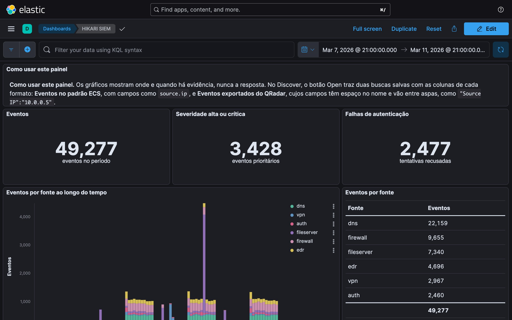
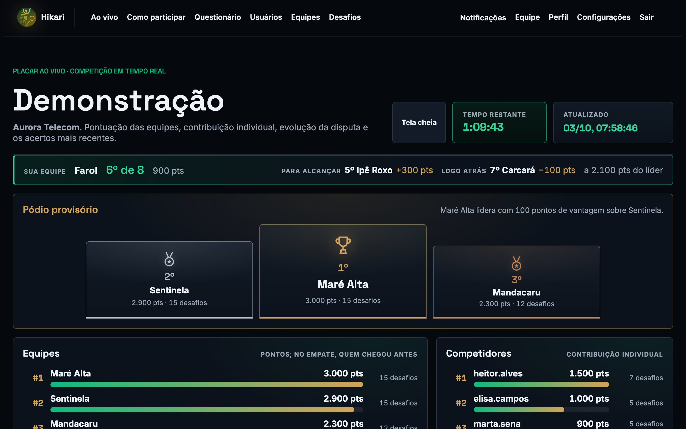
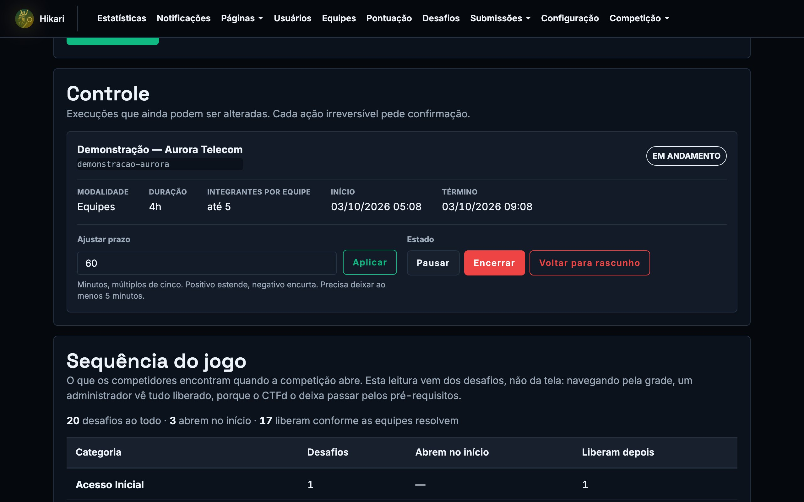

Research platform
Hunt the evidence,
not the flag.
Hikari is a gamified threat-hunting platform. Teams investigate a staged intrusion through a SIEM, answer with what the logs show, and every query they run becomes research data.
01 / Principle
Every answer is
in the logs.
Each challenge asks a question an analyst would ask during an investigation: which host, which account, at what time. The answer exists only in the scenario's evidence, so a team scores by querying the SIEM rather than by guessing. Hints cost points, and after the run each challenge opens a commented solution with the answer, the path to it and what the case teaches.
02 / Method
One scenario.
Every move recorded.
- ScenarioA fictional organization with a generated intrusion and its logs.
- SIEMKibana over the scenario, the tool analysts use at work.
- ChallengesScored by team, with answers in a fixed, taught format.
- TelemetrySIEM queries, submissions and hints logged per team.
- ExportA versioned, pseudonymized data package for each run.



03 / Editions
August 14, 2025, on the predecessor version of the platform. 25 accounts made 1,389 submissions.
August 26, 2026. 13 teams and 76 registrants over four hours. All 125 challenges were solved at least once, and the teams ran 54,698 SIEM queries.
October 15, 2026. 36 teams over five and a half hours on 165 challenges, 65 of them solved, with 20,505 SIEM queries.
04 / Training
Learn the method
on a fictional company.
The short course Threat Hunting na Prática (in Portuguese) teaches the investigation in four cases on the fictional Aurora scenario: notebooks that run in the browser, guided solutions, the course chapter and slides, and the challenge packages for the platform.
After the run: commented solutions, the questionnaire, a verifiable certificate and the export of the recorded activity. Recorded on an isolated install.
05 / Publications and data
Published, preserved,
available on request.
Edition data hold participant activity and stay private. Researchers interested in the data, the platform or a new edition can write to the author.
- Paper
- Barbieri, Belo, Chahud, Meneses, Marcondes and Pereira Júnior. HIKARI – Desafios Reais, Ameaças Ocultas: Uma Plataforma de Threat Hunting Gamificada. SBSeg 2025, in Portuguese.
- Data
- Preserved with checksums: RESEG 2025 platform logs, the RESEG 2026 database and corpus, and the versioned Ciber Week Brisanet 2026 package
- Course
- Threat Hunting na Prática, material in Portuguese
- Contact
- Sidnei Barbieri